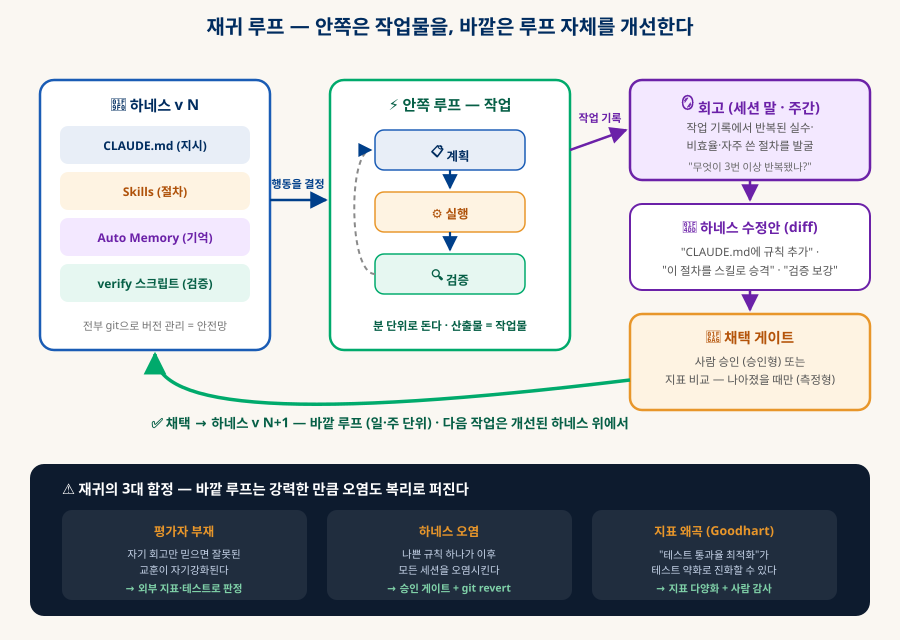

클로드 확장하기
Skills · Subagents · MCP · Hooks — 그리고 하네스·루프 설계
Claude Code는 완제품이 아니라 확장을 전제로 설계된 하네스다. 다섯 개의 확장 축이 각각 무엇이고 언제 쓰는지, 헷갈리는 개념들을 도표로 비교하고 — 이 모든 것을 관통하는 실천 체계인 하네스 엔지니어링과 루프 엔지니어링까지 정리한다.
0. 한눈에 보기 — 확장이 곧 본체다
「로컬 LLM 에이전트」 문서의 결론이 여기서 상용 제품으로 완성된다
「로컬 LLM 에이전트」 문서의 결론은 "기능은 모델이 아니라 하네스에 있다"였다. Claude Code는 그 명제의 상용 완성판이다 — 모델(Claude)은 판단만 하고, 나머지 전부가 사용자가 갈아 끼울 수 있는 확장 지점으로 열려 있다. 지시(CLAUDE.md), 절차(Skills), 능력(MCP), 노동력(Subagents), 강제 규칙(Hooks) — 다섯 축을 이해하면 "내 작업 방식에 맞는 AI 환경"을 직접 조립할 수 있다.
+ 배포 단위(Plugin)
마크다운 파일 하나
(항상·조건부·호출 시)
(나머지는 확률적)
1. 확장의 지도 — 하나의 하네스, 다섯 개의 축
전체 그림을 먼저 — 각 축의 상세는 §2~6에서

| 축 | 메커니즘 | 한 문장 정의 | 정의하는 곳 |
|---|---|---|---|
| 📌 지시 | CLAUDE.md | "항상 알아야 할 것" — 매 세션 자동 로드 | ./CLAUDE.md · ~/.claude/CLAUDE.md |
| 📖 절차 | Skills | "필요할 때만 펴보는 매뉴얼" | .claude/skills/이름/SKILL.md |
| 🔌 능력 | MCP | "실제로 할 수 있는 일 추가" | .mcp.json · claude mcp add |
| 👥 노동력 | Subagents | "별도 두뇌에게 위임" — 독립 컨텍스트 | .claude/agents/이름.md |
| 🪝 강제 | Hooks | "판단과 무관하게 반드시 실행" | settings.json의 hooks 항목 |
| 📦 배포 | Plugins | "위 전부를 묶은 설치 패키지" | plugin.json + 폴더 구조 |
B같은 표, 이번엔 실물로 — 실제 활용 예시 비교
정의만으로는 감이 안 온다. 각 축이 현장에서 실제로 어떤 모습인지, 그리고 바로 이 지식 문서함 프로젝트에 적용한다면 무엇이 되는지를 나란히 놓으면 차이가 만져진다:
| 메커니즘 | 일반적인 활용 예시 | 이 지식 문서함이라면? |
|---|---|---|
| CLAUDE.md | · "커밋 메시지는 한국어, 컨벤션은 이렇게" · "빌드는 npm run build, 테스트는 pnpm test" · "이 모노레포의 폴더별 역할은 …" |
실존한다 — 저장소의 CLAUDE.md에 "push = 배포", "문서 수정 시 docs.json version +1", "새 문서는 head 3요소 포함" 규칙이 있어서, 매 세션 자동으로 지켜지고 있다. |
| Skill | · /release-check — 배포 전 점검 12단계 · /pr-desc — PR 설명을 팀 양식으로 작성 · /db-migrate — 마이그레이션 생성 절차 |
/new-doc 스킬을 만들 수 있다 — "보일러플레이트 복사 → 본문 작성 → docs.json 등록 → noscript 추가 → 360px 렌더 검증"이라는, 매번 반복해 온 새 문서 절차의 공식화. |
| MCP | · playwright — 만든 웹페이지를 실제 브라우저로 검증 · github — 이슈·PR을 대화로 조회·생성 · postgres — "이번 달 가입자 수 뽑아줘" |
fetch 서버로 자료 조사(네트워크 문서 쓸 때 RFC 원문 확인 같은), github 서버로 "이 저장소 최근 커밋 요약해줘". |
| Subagent | · 리서치 에이전트 — 웹 20곳 조사 후 요약만 반환 · 보안 리뷰어 — 저렴한 모델로 정적 점검 전담 · 테스트 작성자 — 커버리지 빈 곳 채우기 |
실제로 썼다 — 이 문서의 §2~6 골격은 공식 문서를 조사한 전용 에이전트(claude-code-guide)의 산출물이다. 추가로 "문서 교정 에이전트"(용어 통일·맞춤법 전담)도 유용할 것. |
| Hook | · PostToolUse: 파일 저장마다 prettier 자동 실행 · PreToolUse: rm -rf·시크릿 노출 명령 차단 · Stop: 응답 끝날 때 알림음 |
push 전에 "docs.json이 참조하는 파일 전부 실존하는지" 검사하는 훅 — 지금은 매번 수동으로 돌리는 검증 스크립트를 기계 보장으로 승격시키는 것. |
| Plugin | · 팀 온보딩 패키지 — 코딩 규칙 스킬 + 리뷰 에이전트 + lint 훅 한 방 설치 · 커뮤니티 보안 감사 플러그인 |
"knowledge-db 저작 도구" — 위의 /new-doc 스킬 + 교정 에이전트 + 검증 훅을 묶으면, 다른 PC에서도 설치 한 번으로 같은 저작 환경이 갖춰진다. |
2. 지시·절차 계층 — 컨텍스트에 "언제" 실을 것인가
CLAUDE.md·rules·메모리·Skills는 결국 같은 질문의 네 가지 답이다
컨텍스트 창은 한정된 책상이다. 지시를 전달하는 네 가지 메커니즘의 차이는 내용이 아니라 로딩 시점에 있다 — 항상 올려둘 것(비싸지만 확실), 조건이 맞을 때만(중간), 호출할 때만(공짜에 가까움). 이 3층 구조가 이 장의 전부다:

ACLAUDE.md · rules · Auto Memory — 지속 지시의 3형제
| 메커니즘 | 누가 쓰나 | 로딩 | 담는 것 |
|---|---|---|---|
| CLAUDE.md | 사람 | 항상 (매 세션) | 프로젝트 규칙·빌드 명령·아키텍처 요약. 이 저장소의 CLAUDE.md가 실례 — "문서 수정 시 docs.json version +1" 같은 규칙을 Claude가 매 세션 아는 이유. 200줄 이하 권장. |
| .claude/rules/*.md | 사람 | 조건부 (경로 매칭) | 특정 폴더·파일에만 적용되는 규칙. CLAUDE.md가 길어질 때 내려보내는 곳. |
| Auto Memory | Claude 스스로 | 인덱스만 항상, 상세는 필요 시 | 작업하며 배운 것(디버깅 팁·사용자 선호·프로젝트 사정)을 자동 축적. 이 프로젝트에서도 "여러 PC 사용 → 작업 전 pull" 같은 사실이 메모리에 저장되어 세션을 넘어 유지되고 있다. |
| CLAUDE.local.md | 사람 | 항상 | git에 안 올리는 개인용 지시 (팀 공유 CLAUDE.md와 분리). |
BSkills — 점진적 공개(Progressive Disclosure)의 교과서
스킬은 폴더 하나 + SKILL.md 파일 하나다. 핵심 설계는 평소에 frontmatter의 description 한 줄만 컨텍스트에 올라가 있다가, 사용자가 /이름으로 부르거나 Claude가 "지금 작업과 맞다"고 판단하는 순간에만 본문 전체가 로드된다는 것. 로컬 LLM 문서 §6의 "도구 다이어트"를 프롬프트에 적용한 셈이다 — 아무리 긴 절차도 평소 비용은 한 줄.
--- description: 배포 전 점검을 수행한다. 사용자가 배포·릴리스를 언급하면 사용. ← 이 한 줄만 상시 로드 disable-model-invocation: false # true면 자동 트리거 금지, /이름 호출만 허용 --- # 배포 전 점검 절차 ← 여기부터는 호출된 순간에만 로드 1. 테스트 전체 실행 — 실패 시 중단하고 보고 2. 빌드 산출물 크기 비교 (직전 배포 대비 ±20% 이상이면 경고) 3. 환경 변수 체크리스트 확인 4. $ARGUMENTS 로 전달받은 대상 환경에 맞는 설정 검증 # /release-check staging 처럼 인자 전달
3. Subagents — 딴 방에서 일 시키고 결론만 받기
컨텍스트 오염 문제의 구조적 해법
리서치·대규모 코드 탐색·로그 분석 같은 작업은 부산물이 크다 — 웹페이지 수십 개, 파일 수백 개가 대화에 쌓이면 정작 중요한 맥락이 밀려난다. 서브에이전트는 이 문제를 공간 분리로 푼다: 자기만의 컨텍스트 윈도우에서 일하고, 주 대화에는 최종 결과만 돌려준다.

정의는 .claude/agents/이름.md 파일 하나. frontmatter의 두 필드가 핵심이다 — tools(도구 화이트리스트: 리서치 에이전트에게 파일 쓰기 권한을 줄 이유가 없다 — 권한 최소화)와 model(가벼운 조사는 Haiku 같은 싼 모델로, 어려운 리뷰는 상위 모델로 — 비용 라우팅). 호출은 Claude가 description을 보고 자동 위임하거나, 사용자가 명시적으로 시킬 수 있고, 독립적인 작업이라면 여러 에이전트를 동시에 병렬 실행할 수 있다.
4. MCP — 이미 배운 그 구조, Claude Code의 방식
원리는 「로컬 LLM 에이전트」 §3 그대로 — 여기서는 Claude Code 특유의 것만
MCP의 동작 원리(stdio 자식 프로세스, JSON-RPC, tools/list → tools/call)는 「로컬 LLM 에이전트」 문서 §3에서 상세히 해부했다 — Claude Code도 그 문서의 "MCP 호스트" 중 하나일 뿐이다. 여기서는 Claude Code 고유의 세 가지만 추가한다: 등록 명령, 스코프, 그리고 도구 외 제공물.
# 로컬 stdio 서버 (플레이라이트 브라우저 조작) claude mcp add playwright -- npx -y @playwright/mcp@latest # 원격 HTTP 서버 + 모든 프로젝트에서 쓰도록 user 스코프로 claude mcp add --scope user --transport http docs https://code.claude.com/docs/mcp # 팀과 공유하려면 프로젝트 루트의 .mcp.json에 (git으로 커밋)
| 스코프 | 저장 위치 | 공유 범위 — 언제 쓰나 |
|---|---|---|
| local (기본) | ~/.claude.json 내 프로젝트 항목 | 나만 + 이 프로젝트만. 실험 중이거나 개인 토큰이 필요한 서버. |
| project | .mcp.json (저장소 루트) | 팀 전체 공유 — git으로 커밋되어 팀원 모두 같은 도구를 갖게 된다. |
| user | ~/.claude.json 최상위 | 나만 + 모든 프로젝트. 어디서나 쓰는 범용 서버(문서 검색 등). |
MCP 서버는 도구만 주는 게 아니다 — 리소스(프롬프트에서 @이름으로 참조하는 데이터: DB 스키마, 디자인 파일 등)와 프롬프트(/mcp 명령으로 쓰는 템플릿)도 제공한다. 연결 상태 확인은 /mcp 한 줄이면 된다.
5. Hooks — AI의 판단을 믿지 않는 자동화
다른 모든 확장은 확률적이다. "반드시"가 필요하면 여기다
CLAUDE.md에 "커밋 전 꼭 lint를 돌려라"라고 써두면 Claude는 대체로 따른다 — 하지만 보장은 없다. 훅은 이 간극을 메운다: 세션 라이프사이클의 이벤트에 셸 명령을 걸어두면, 모델의 판단과 무관하게 무조건 실행된다. 가장 많이 쓰는 지점은 도구 호출을 감싸는 두 곳이다 — 실행 전(PreToolUse, 차단 가능)과 실행 후(PostToolUse, 후처리).

{ "hooks": { "PostToolUse": [{ "matcher": "Write|Edit", ← 파일을 쓰거나 고칠 때마다 "hooks": [{ "type": "command", "command": "npx prettier --write $FILE_PATH" }] }], "PreToolUse": [{ "matcher": "Bash", ← 셸 명령 실행 직전에 "hooks": [{ "type": "command", "command": "./.claude/hooks/block-dangerous.sh" }] }] ← 스크립트가 실패를 반환하면 도구 실행 자체가 차단됨 } }
6. Plugins — 조립품을 나눠주는 방법
다섯 축의 조합이 쓸 만해졌다면, 상자에 담아 배포한다
스킬 몇 개 + 전용 에이전트 + 훅 + MCP 설정을 조합해 좋은 워크플로를 만들었다면, 그 조합 자체가 자산이다. 플러그인은 이것들을 한 폴더에 담고 매니페스트(plugin.json)를 붙인 배포 단위로, 마켓플레이스(공식·커뮤니티·사내)를 통해 설치·공유·버전 관리된다. 설치하면 스킬은 /플러그인명:스킬명처럼 네임스페이스가 붙어 충돌을 피한다.
my-plugin/ ├── .claude-plugin/plugin.json ← 매니페스트 (이름·설명·버전) — 유일한 필수품 ├── skills/…/SKILL.md ← 절차들 ├── agents/…/*.md ← 전용 서브에이전트들 ├── hooks/hooks.json ← 강제 규칙들 └── .mcp.json ← 딸려가는 MCP 서버 설정 # 설치: /plugin install 마켓플레이스/이름 · 개발 테스트: claude --plugin-dir ./my-plugin
7. 비교분석 — 헷갈리는 것들을 도표로 가른다
비슷해 보이는 개념일수록 "다른 점 하나"만 잡으면 된다
A전체 비교표 — 여섯 메커니즘 한판 정리
| 기준 | CLAUDE.md | Skill | Subagent | MCP | Hook | Plugin |
|---|---|---|---|---|---|---|
| 본질 | 상시 지시 | 주문형 절차 | 위임 노동자 | 외부 능력 | 강제 장치 | 배포 상자 |
| 컨텍스트 비용 | 매 세션 전체 | 평소 한 줄, 호출 시 전체 | 0 (딴 방) | 도구 스키마만 상시 | 0 (창 밖에서 실행) | 내용물에 따름 |
| 실행 주체 | 모델이 읽고 판단 | 모델이 읽고 수행 | 별도 모델 인스턴스 | 외부 프로세스 | 셸(기계) | — |
| 보장 수준 | 확률적 | 확률적 | 확률적 | 호출되면 확실 | 결정론적 | — |
| 트리거 | 세션 시작 | /이름 · 자동 | 위임 · 자동 | 모델의 도구 선택 | 이벤트 발생 | 설치 시 |
| 파일 형태 | md 1개 | md 1개(+부속) | md 1개 | json 설정 | json 설정 | 폴더+매니페스트 |
B헷갈리는 4쌍 — 결정적 차이 하나씩
| 헷갈리는 쌍 | 결정적 차이 | 선택 기준 |
|---|---|---|
| CLAUDE.md vs Skill | 로딩 시점 — 항상 vs 호출 시 | 매 작업에 관련되면 CLAUDE.md, 가끔 쓰는 긴 절차면 Skill. "CLAUDE.md가 200줄을 넘기 시작하면 절차들을 Skill로 이사시켜라." |
| Skill vs Subagent | 누가 하느냐 — 내가(주 대화가) 절차를 따라 하기 vs 남에게 통째로 맡기기 | 결과 과정이 대화에 남아야 하면 Skill, 부산물이 많아 대화를 오염시키면 Subagent. Skill은 지시서, Subagent는 직원. |
| Subagent vs MCP | 지능 vs 기능 — 판단하는 별도 두뇌 vs 판단 없는 도구 | "검색해서 종합·평가까지" 필요하면 Subagent, "URL 내용 가져오기"처럼 정해진 동작이면 MCP 도구. Subagent가 MCP 도구를 쓰기도 한다(포함 관계). |
| Hook vs Skill 자동 트리거 | 보장 수준 — 무조건 vs 모델이 맞다고 판단할 때 | 어겨도 되는 관행이면 Skill, 어기면 사고면 Hook. "보안 검사를 대체로 해줘"는 Skill, "시크릿이 커밋되면 무조건 막아"는 Hook. |
C상황 → 선택 치트시트
| 증상 / 상황 | 처방 |
|---|---|
| "같은 설명을 매 세션 반복하고 있다" | CLAUDE.md 한 번 적으면 끝 |
| "특정 폴더에서만 지켜야 할 규칙이다" | rules 경로 조건부 — CLAUDE.md 비대화 방지 |
| "12단계짜리 배포 절차를 가끔 쓴다" | Skill — 평소 비용 한 줄 |
| "리서치를 시키면 대화가 원문으로 뒤덮인다" | Subagent — 요약만 반환 |
| "GitHub 이슈·DB·브라우저를 직접 다루게 하고 싶다" | MCP — 능력 자체를 추가 |
| "파일 저장할 때마다 무조건 포맷터가 돌아야 한다" | Hook (PostToolUse) — 유일한 "무조건" |
| "이 조합을 팀 전체에 배포하고 싶다" | Plugin + project 스코프 .mcp.json |
8. 하네스 엔지니어링 — 레버는 모델 밖에 있다
프롬프트 → 컨텍스트 → 하네스: 실천의 무게중심이 이동해 온 궤적
에이전트 시대에 들어서며 업계의 실천 체계가 이동하고 있다. 질문 한 번을 잘 쓰는 프롬프트 엔지니어링에서, 창에 무엇을 넣을지 관리하는 컨텍스트 엔지니어링으로, 그리고 지금은 모델 바깥의 시스템 전체 — 도구·권한·검증·피드백·환경 — 를 설계하는 하네스 엔지니어링으로. (뒤의 두 용어는 업계에서 굳어지는 중인 신조어로, 경계가 칼같이 합의된 것은 아니다 — 중요한 건 이름보다 무게중심의 이동 그 자체다.)

하네스 엔지니어링의 목표는 역설적이다: "모델이 평범한 판단을 해도 시스템이 좋은 결과로 이끌도록" 만드는 것. 모델의 지능에 기대는 대신, 실수해도 회복되고(오류 재주입), 벗어나면 막히고(훅·권한), 확인 없이 넘어가지 못하게(검증 게이트) 환경을 짜는 일이다. 이 관점으로 보면 이 문서 전체가 사실 하네스 엔지니어링의 부품 목록이었다:
| 하네스 설계의 관심사 | Claude Code에서의 손잡이 | 이 지식 문서함 작업의 실례 |
|---|---|---|
| 컨텍스트 예산 관리 | CLAUDE.md 다이어트 · Skill · 메모리 계층 | CLAUDE.md에 규칙 요약만, 세부는 planning/ 문서로 분리 |
| 도구 설계 | MCP · 도구 화이트리스트 | — |
| 권한과 안전망 | permissions 설정 · Hooks · 폴더 제한 | filesystem 서버에 작업 폴더만 (로컬 LLM 문서 §6) |
| 검증 환경 | 테스트·렌더링 확인을 도구로 제공 | 헤드리스 크롬 360px 렌더링 검증 — push 전에 눈으로 확인할 수단을 하네스에 넣은 것 |
| 지식의 지속 | Auto Memory · CLAUDE.md | "다중 PC라 작업 전 pull" 이 메모리로 축적되어 다음 세션에 자동 적용 |
| 작업 분해 | Subagents · 병렬 위임 | 공식 문서 조사를 전용 에이전트로 분리 (§3 실례) |
9. 루프 엔지니어링 — 반복의 품질을 설계한다
하네스가 "무대"라면, 루프는 그 위의 "안무"다
에이전트의 실력은 한 번의 응답이 아니라 반복의 품질에서 나온다. 같은 모델·같은 도구라도 "실행하고 확인 안 하는 루프"와 "실행→검증→수정을 도는 루프"는 결과가 하늘과 땅이다. 루프 엔지니어링은 이 반복 구조 자체를 설계하는 일이다 — 몇 바퀴 돌지, 무엇으로 검증할지, 언제 멈출지, 사람은 어디에 설지.

A좋은 루프의 4대 요소
🔍 ① 검증이 루프 안에 있다
"만들었다"와 "된다"는 다르다. 코드는 실행·테스트로, 웹은 렌더링으로, 문서는 링크 체크로 — 확인 수단이 루프의 정규 단계여야 한다. 검증 없는 루프는 반복이 아니라 반복적 추측이다.
💬 ② 실패가 다음 입력이 된다
오류 메시지·테스트 실패·렌더링 깨짐을 숨기지 않고 그대로 재주입하면 모델이 스스로 고친다. 로컬 LLM 문서 §2에서 "오류도 모델에게"라고 했던 그 원칙 — 에이전트다움의 절반이 여기서 나온다.
⏱ ③ 정지 조건이 명시돼 있다
반복 상한, 시간·비용 예산, "진전 없음" 감지(같은 오류 2회면 접근을 바꾸거나 사람에게). 상한 없는 루프는 같은 실수를 무한히 반복하는 가장 비싼 방법이다.
🧑⚖️ ④ 심판이 분리돼 있다
만든 자가 채점하면 관대해진다. 테스트 스위트·린터·별도 리뷰 에이전트·사람 — 생성과 평가를 다른 주체로 두는 것이 자기 채점 편향의 구조적 해법이다.
B사람은 어디에 서는가 — 게이트의 3단 배치
| 단계 | 대상 | 이유 |
|---|---|---|
| 🟢 자동 진행 | 파일 수정, 로컬 테스트, 브랜치 커밋 | 되돌리기 쉬운 것 — 여기까지 자동이어야 루프가 빠르게 돈다. git이 안전망(전부 이력에 남는다). |
| 🟡 사람 게이트 | push·배포, 메시지 발송, 비용 발생 작업 | 바깥 세상에 드러나는 것 — 루프의 출구에서 한 번 확인. 이 지식 문서함 작업이 정확히 이 리듬이다: 수정·검증은 자동으로 돌고, push는 확인 후. |
| 🔴 훅으로 원천 차단 | 파괴적 명령, 시크릿 노출, 보호 브랜치 직push | 확률이 아니라 구조로 막아야 하는 것 — §5의 결정론적 장치가 여기 배치된다. |
C실전 구축 — 루프를 실제로 만드는 5레벨
"그래서 루프를 어떻게 만드나?"에 대한 답은 한 방이 아니라 사다리다. 아래 레벨을 순서대로 올라가면 되고, 각 레벨은 이전 레벨 위에 쌓인다. 낮은 레벨은 5분이면 되고, 높은 레벨일수록 보장이 강해진다.
| 레벨 | 수단 | 보장 수준 | 무엇이 좋아지나 |
|---|---|---|---|
| L0 · 지시로 심기 | CLAUDE.md·프롬프트에 루프 명문화 | 확률적 | "만들고 끝"이 "만들고 확인"으로 바뀐다. 5분 투자. |
| L1 · 검증 명령 제공 | verify 스크립트 한 개 | 확률적+ | "됐다"의 정의가 명령어 하나로 객관화된다. |
| L2 · 훅으로 강제 | PostToolUse에 검증 삽입 | 결정론적 | 실패가 모델 의사와 무관하게 반드시 재주입된다. |
| L3 · 심판 분리 | 리뷰 서브에이전트 게이트 | 확률적(교차) | 자기 채점 편향 차단 — 다른 눈이 본다. |
| L4 · 자작 루프 | 코드로 루프 자체를 소유 | 결정론적 | 반복 횟수·수렴 조건·병렬 탐색까지 전부 내 마음대로. |
L0 — 지시로 루프 심기. 가장 싸고 즉효인 방법: 루프의 골격(검증→수정→상한)을 CLAUDE.md에 명문화한다. 모델은 대체로 따르고, 이것만으로도 "한 번 만들고 끝" 습관이 사라진다:
## 작업 수칙 - 코드를 수정하면 반드시 테스트를 실행하고, 실패하면 원인을 분석해 수정 후 재실행한다 - 같은 오류가 2회 반복되면 접근을 바꾸거나 멈추고 사용자에게 보고한다 (같은 시도 반복 금지) - "완료"라고 말하기 전에 검증 결과(테스트 출력·렌더 확인)를 함께 제시한다
L1 — "됐다"를 명령어로 정의. 루프의 품질은 검증의 품질이다. 프로젝트마다 한 방에 도는 검증 스크립트를 만들어 CLAUDE.md에 등록하면, 모델도 사람도 같은 기준으로 판정한다:
#!/bin/bash set -e python3 check_manifest.py # docs.json이 참조하는 파일 전부 실존? python3 check_svg.py # SVG들 XML 유효? node check_overflow.js # 360px에서 가로 오버플로 없나? (헤드리스 크롬) echo "✅ verify 통과" # CLAUDE.md에는 한 줄: "push 전 반드시 ./scripts/verify.sh 를 실행한다"
L2 — 훅으로 루프에 검증을 용접. L0·L1은 모델이 "깜빡"할 수 있다. 훅을 걸면 파일을 고칠 때마다 검증이 자동 실행되고, 실패 출력이 자동으로 모델에게 재주입된다 — §9-A의 "오류 재주입"이 사람 손 없이 도는 것이다:
{ "hooks": { "PostToolUse": [{ "matcher": "Edit|Write", "hooks": [{ "type": "command", "command": "./scripts/verify.sh" }] }] ← 실패하면 그 출력이 대화에 주입됨 → 모델이 보고 다음 턴에 수정 → 자연히 루프가 된다 } }
L3 — 심판을 분리. 기계 검증(테스트)이 못 잡는 것 — 설계 품질, 보안 관점, 요구사항 충족 — 은 다른 눈이 필요하다. 리뷰 전용 서브에이전트를 정의하고, "완료 선언 전 리뷰 통과"를 규칙으로 삼는다:
--- description: 구현 완료 후 코드 리뷰를 전담한다. 완료 선언 전 반드시 호출. tools: [Read, Grep, Bash] # 읽기·검사만 — 수정 권한 없음 (심판은 펜을 잡지 않는다) --- 당신은 비판적 리뷰어다. 구현자의 주장을 믿지 말고 직접 확인하라. - 요구사항 대비 빠진 것 · 엣지 케이스 · 보안 문제를 찾는다 - 각 지적에 파일:줄 근거를 붙인다 · 문제없으면 "통과"라고만 답한다 # CLAUDE.md에 한 줄: "구현 완료 시 reviewer 에이전트의 통과를 받은 뒤 보고한다"
L4 — 루프 자체를 코드로 소유. 반복 횟수·수렴 판정·병렬 탐색까지 통제하려면 루프를 직접 짠다. 로컬 LLM 문서 §2의 에이전트 루프에 검증 단계와 정지 조건을 추가한 것이 전부다:
import subprocess from openai import OpenAI client = OpenAI(base_url="http://localhost:11434/v1", api_key="ollama") def run_tests() -> tuple[bool, str]: r = subprocess.run(["pytest", "-x", "-q"], capture_output=True, text=True) return r.returncode == 0, (r.stdout + r.stderr)[-3000:] # 실패 로그는 꼬리만 messages = [{"role":"user", "content": "이 함수의 버그를 고쳐줘: …"}] last_err = "" for attempt in range(5): # ⏱ 정지 조건 ①: 반복 상한 reply = client.chat.completions.create(model="qwen3:30b-a3b", messages=messages) apply_patch(reply) # 모델이 제안한 수정을 적용 (도구 호출로 구현) ok, log = run_tests() # 🔍 검증이 루프의 정규 단계 if ok: print(f"✅ {attempt+1}회 만에 통과"); break if log == last_err: # ⏱ 정지 조건 ②: 진전 없음 감지 print("⚠️ 같은 오류 반복 — 사람에게 에스컬레이션"); break last_err = log messages.append({"role":"user", "content": f"테스트 실패:\n{log}\n원인을 분석해 다시 고쳐줘"}) # 💬 실패가 다음 입력이 된다 — §9-A의 4대 요소가 코드 20줄에 전부 들어있다
D재귀 루프 — 루프가 자기 자신을 개선할 때
여기까지의 루프(A~C)는 작업물을 개선했다. 마지막 단계는 루프를 한 층 위로 올리는 것 — 루프의 산출물이 하네스 자체인 루프다. 작업이 끝나면 "이번 루프가 어땠는가"를 회고하고, 그 교훈으로 CLAUDE.md·스킬·메모리·검증 스크립트를 수정한다. 다음 작업은 개선된 하네스 위에서 돌고, 같은 모델이 시간이 갈수록 점점 더 잘하게 된다. 학습하는 것은 모델(가중치)이 아니라 시스템(하네스)이다. 영어권에서는 self-improving agent, 회고형 하네스 최적화 같은 이름으로 활발히 연구되는, 2026년 현재 가장 뜨거운 주제다.

바깥 루프의 수정 표적은 하네스의 다섯 부위 전부다. 어디를 재귀시키느냐에 따라 얻는 것이 다르다:
| 수정 표적 | 재귀가 만드는 개선 | 전형적인 회고 발견 |
|---|---|---|
| 지시 (CLAUDE.md) | 같은 실수가 규칙이 되어 재발 방지 | "perl 정규식이 BSD에서 두 번 깨졌다 → '치환은 perl로' 규칙 추가" |
| 절차 (Skills) | 반복 작업이 공식 절차로 승격 | "새 문서 만들 때 같은 6단계를 세 번 반복했다 → /new-doc 스킬로" |
| 기억 (Memory) | 프로젝트 사정·사용자 선호가 축적 | "이 사용자는 여러 PC를 쓴다 → 작업 전 pull부터" |
| 도구 (스크립트·MCP) | 수작업이 자동화 도구로 | "오버플로를 눈으로 확인하고 있다 → 측정 스크립트를 만들자" |
| 검증 (테스트·훅) | 빠져나간 버그가 새 검사 항목으로 | "그룹 라벨 중복을 늦게 발견했다 → docs.json 그룹 인접성 검사 추가" |
연구 계보 — 이 아이디어는 어디까지 가 있나
Voyager(2023): 마인크래프트 에이전트가 새 기술을 익힐 때마다 재사용 가능한 스킬 코드를 스스로 작성·축적 — "스킬 자가 생성"의 원형. ADAS(2024): 메타 에이전트가 에이전트 설계 자체를 코드로 제안→평가→채택하는 자동 탐색. Darwin Gödel Machine(2025): 코딩 에이전트가 자기 하네스 코드를 수정하고, 벤치마크가 오른 변종만 살아남는 진화 아카이브를 유지. AlphaEvolve(2025): LLM+진화 탐색으로 알고리즘을 개선해 일부 문제에서 인간 기록 갱신. DSPy: 지표를 주면 프롬프트·파이프라인을 자동 최적화하는 컴파일러적 접근.
2026년에는 회고형 하네스 최적화 계열 — 라벨 없는 과거 작업 기록만으로 반복 실패를 진단해 CLAUDE.md·메모리·스크립트 개선안을 만들고, 자체 선호 비교를 통과한 것만 적용하는 방식 — 이 활발하다. 연구자들은 "좋은 하네스 수정안을 만드는 능력"과 "수정된 하네스를 활용하는 능력"을 별개 축으로 구분하기 시작했다. 공통 골격은 하나: 변이(수정안) → 평가 → 선택, 진화 알고리즘이다.
구현 방식 3종 — 통제 수준에 따라 고른다
방식 ① 승인형 재귀 (실무 표준 — 오늘 구축 가능). AI가 회고하고 수정안을 제안하되, 하네스 반영은 사람이 승인한다. 핵심 부품은 회고 스킬 하나다:
--- description: 세션 회고. 사용자가 /retro를 부르거나 큰 작업이 끝났을 때 사용. --- # 세션 회고 절차 1. 이번 세션의 작업 기록을 되짚어 다음을 찾는다: - 반복된 실수 (2회 이상 같은 유형의 오류·재시도) - 반복된 절차 (3회 이상 수행한 동일 단계 — 스킬 승격 후보) - 수작업 검증 (스크립트로 만들 수 있는데 눈으로 한 확인) 2. 각 발견을 하네스 수정안으로 번역한다: - CLAUDE.md 규칙 추가/수정 → diff 형태로 제안 - 새 스킬 → SKILL.md 초안 작성 - 새 검증 → 스크립트 초안 작성 3. 직접 적용하지 않는다. 제안 목록 + 근거(몇 번 반복됐나)를 보고하고 승인을 기다린다. 4. 승인된 항목만 반영하고, 변경을 별도 커밋으로 남긴다 (제목: "harness: …")
운영 리듬은 단순하다: 큰 작업 뒤 또는 주 1회 /retro → 제안 검토(1~2분) → 승인 → harness: 커밋. 하네스 변경이 전부 git 이력에 남으므로 나쁜 규칙은 revert 한 번으로 소독된다 — git이 재귀 루프의 안전망이다. 여기에 Auto Memory(자동 축적)와 "같은 절차 3번 반복하면 스킬 승격을 제안하라"는 CLAUDE.md 규칙을 더하면 승인형 재귀의 완성이다.
방식 ② 측정형 재귀 (반자동). 객관적 지표(테스트 스위트, verify 통과율, 벤치마크 과제 묶음)가 있다면 승인 게이트를 지표 비교로 대체할 수 있다 — 수정안을 적용한 하네스가 실제로 더 나은 성적을 낼 때만 채택:
def score(harness) -> float: # 고정된 평가 과제 N개를 해당 하네스로 실행, 성공률·비용·시간을 합산 점수로 return run_benchmark_tasks(harness, tasks=EVAL_SET) base = score(current_harness) for proposal in retro_proposals(): # 방식 ①의 /retro가 만든 수정안들 candidate = apply(current_harness, proposal) if score(candidate) > base * 1.02: # 2% 이상 개선일 때만 (노이즈 방지) current_harness = candidate # 채택 — git 커밋 base = score(candidate) # 주의: EVAL_SET은 고정·다양해야 한다. 좁은 지표는 Goodhart를 부른다 (아래 함정 표)
방식 ③ 진화형 재귀 (연구 수준). 하네스 변형을 여러 개 병렬 생성해 각각 벤치마크를 돌리고, 성적순으로 살아남은 것들의 아카이브를 유지하며 세대를 거듭한다 — Darwin Gödel Machine의 방식이다. 탐색력은 가장 강하지만 평가 비용이 크고, 지표가 조금이라도 어긋나 있으면 그 어긋남을 향해 전력으로 진화한다. 개인 프로젝트에는 과하고, ①→②의 순서로 충분하다.
| 함정 | 무슨 일이 벌어지나 | 안전장치 |
|---|---|---|
| 평가자 부재 | 자기 회고만 믿으면 잘못된 교훈("이 방법이 좋았다"는 착각)이 규칙으로 굳어 자기강화된다. | 회고의 근거를 객관 기록(오류 로그·재시도 횟수)으로 제한하고, 채택은 외부 지표나 사람이 판정. |
| 하네스 오염 (복리) | 작업물 버그는 그 작업만 망치지만, CLAUDE.md의 나쁜 규칙은 이후 모든 세션을 오염시킨다. | 승인 게이트 + 하네스 변경을 별도 커밋으로 — 이상 징후 시 git revert 한 번으로 복구. |
| 지표 왜곡 (Goodhart) | "테스트 통과율을 높여라"를 재귀시키면 테스트를 약화시키는 방향으로 진화할 수 있다 — 실제 관찰된 현상. | 지표를 다양화(성공률+비용+시간)하고, 검증 자체의 변경은 반드시 사람 승인으로 격리. |